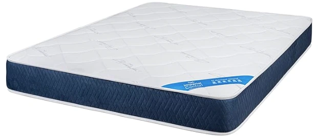
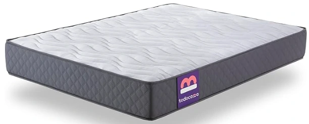
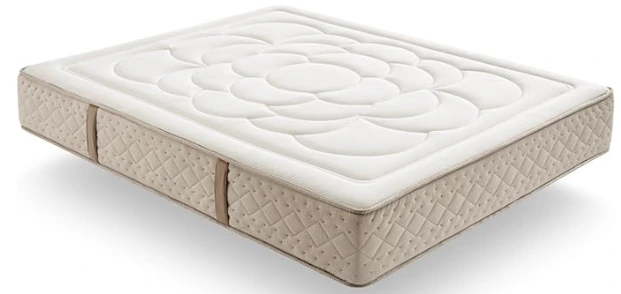
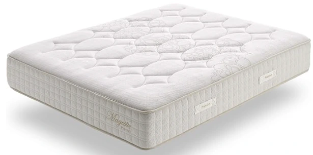
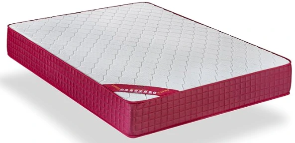
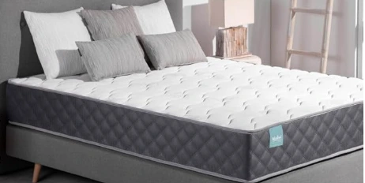
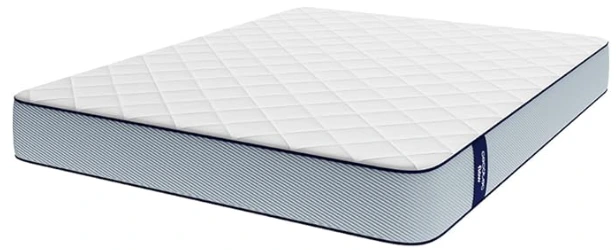
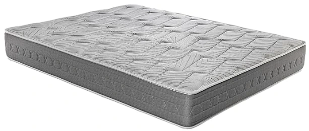
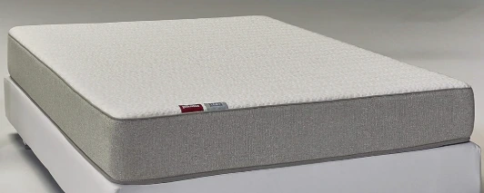

üõ°Ô∏è Recomendaciones reales desde 2020
⭐ Análisis imparciales por expertos
üîù‚Äã Lo probamos por ti para que elijas lo mejor
üõ°Ô∏è Recomendaciones reales desde 2020
⭐ Análisis imparciales por expertos
üîù‚Äã Lo probamos por ti para que elijas lo mejor

Contenido actualizado en junio de 2025
Bienvenido a la guía definitiva para encontrar el mejor colchón 90x190 de 2025. Si buscas un colchón viscoelástico cómodo, con buena ventilación, firmeza real y sin pagar de más, aquí tienes lo mejor tras analizar más de 15 modelos distintos.
Soy Carlos, especialista en descanso, y te comparto solo lo que merece la pena comprar, sin rodeos ni marcas metiendo mano. Si un colchón da calor, lo digo. Si es blando de más, también. Vamos con lo que realmente importa.
| Imagen | Modelo | Firmeza | Material principal | Comprar |
|---|---|---|---|---|
|  | Imperial Confort Oslo New Viscoelástico | Media-Alta | Viscoelástica + Sensopur HR | Ver en Amazon |
|  | Todocama Pure Flow Max Viscoelástico | Media-Alta | Viscoelástica + HR multicapa | Ver en Amazon |
|  | Simpur Dream Repair Viscoelástico | Media-Alta | HR + visco Bio Sense | Ver en Amazon |
|  | Simpur Visco Spring Magestic Muelles Ensacados + Viscoelástico | Alta | Muelles ensacados + viscoelástica | Ver en Amazon |
|  | Dormio Zafiro Viscoelástico | Media-Alta | Memory foam + HR | Ver en Amazon |
|  | ZZ Don Descanso Mulhacén Viscoelástico | Media-Alta | Memory foam + espuma Breath Soft | Ver en Amazon |
|  | Cecotec Flow ViscoCare 1900 Viscoelástico | Alta | Memory foam + HR FoamTech | Ver en Amazon |
|  | Royal Sleep Ceramic Plus Viscoelástico + Carbono | Alta | Visco carbono + biocerámica | Ver en Amazon |
|  | Pikolin Leah | Alta | Viscoelástica + HR | Ver en Amazon |
Firmeza Media-Alta
Material principal Viscoelástica + Sensopur HR
Firmeza Media-Alta
Material principal Viscoelástica + HR multicapa
Firmeza Media-Alta
Material principal HR + visco Bio Sense
Firmeza Alta
Material principal Muelles ensacados + viscoelástica
Firmeza Media-Alta
Material principal Memory foam + espuma Breath Soft
Firmeza Alta
Material principal Memory foam + HR FoamTech
Firmeza Alta
Material principal Visco carbono + biocerámica
Un buen colchón no es solo aquel que se ve mullido o caro, sino el que se adapta a tu cuerpo, mejora tu descanso y cuida tu salud postural. Para mí, elegir bien el colchón es una inversión directa en cómo te sientes cada día. Dormir bien marca la diferencia entre una jornada con energía o una arrastrando el cansancio. En esta lista podrás elegir entre los mejores colchones 90x190 de Amazon, simplemente escoge la firmeza que más se adapte a ti y disfruta de un sueño reparador.
üõå Mejora tu descanso: un colch√≥n de calidad ayuda a dormir más profundo y sin interrupciones.
üîß Cuida tu espalda: aporta el soporte necesario para mantener una buena alineaci√≥n corporal.
üí§ Reduce dolores: minimiza puntos de presi√≥n y evita molestias al despertar.
⏳ Durabilidad: materiales premium que conservan su forma y firmeza durante años.
ü¶† Salud e higiene: mejores tejidos, con tratamientos antiácaros, antibacterias y transpirables.
La firmeza del colchón influye mucho en cómo descansas. No todos necesitamos lo mismo: depende de tu peso, tu postura al dormir y si prefieres una sensación más suave o más firme.
üí™ Firme: ideal si tienes más peso o duermes boca arriba.
üõãÔ∏è Media: la más versátil, funciona bien para la mayor√≠a de personas.
üåô Blanda: perfecta si duermes de lado o tienes poca masa corporal.
Si dudas entre dos firmezas, mi consejo personal es empezar por una media: es la que mejor se adapta a distintos cuerpos y posturas.
ü߆ Adaptabilidad total: la viscoelástica se amolda a tu cuerpo como un guante, reduciendo los puntos de presi√≥n.
üå°Ô∏è Termosensible: reacciona al calor corporal para adaptarse mejor a ti mientras duermes.
ü§´ Silencioso: no hace ruido al moverse, ideal para quienes se despiertan fácilmente.
üõèÔ∏è Comodidad premium: sensaci√≥n de acogida sin hundimiento excesivo.
üí∏ Buena relaci√≥n calidad-precio: ofrece gran confort sin necesidad de gastar en gamas muy altas.
⭐ Valoración del experto: 4.3/5
El colchón Oslo New me ha parecido una opción equilibrada si buscas firmeza media-alta con buen confort. Su núcleo Sensopur HR y el acolchado viscoelástico dan una sensación agradable al tumbarte, sin ser demasiado blando. Me gusta que incluya tratamientos higiénicos contra ácaros y bacterias, lo que aporta tranquilidad si eres alérgico. La transpirabilidad está bien conseguida gracias a sus materiales porosos. Además, es fácil de mantener, ya que seca rápido. Una alternativa correcta y fabricada en España, lo que siempre suma puntos en calidad y confianza.
⭐ Valoración del experto: 4.5/5
Este colchón de Todocama me ha sorprendido por su buena relación calidad-precio. El núcleo HR con estructura de célula abierta aporta firmeza sin perder adaptabilidad, ideal para quienes quieren soporte sin hundirse. Tiene una cara de invierno y otra de verano, lo que lo hace versátil durante todo el año. La cara de invierno es mullida y cálida, mientras que la de verano es muy fresca gracias al tejido 3D. Un detalle que valoro mucho: cuenta con certificaciones como Oeko-Tex y CertiPUR, que garantizan calidad sin sustancias nocivas.
⭐ Valoración del experto: 4.6/5
Si lo que buscas es un colchón viscoelástico alto, duradero y con excelente soporte, este Dream Repair es una pasada. Los 30 cm de altura lo convierten en una opción robusta y muy cómoda. La combinación de capas viscoelásticas y HR ofrece una tumbada ergonómica. Incorpora 13 zonas de confort que se notan sobre todo si tienes problemas de espalda o duermes en varias posturas. Además, los materiales están pensados para reducir el calor y la humedad, y cuenta con terapia de carbono que combate los malos olores. Es un colchón de gama alta que se nota desde la primera noche.
⭐ Valoración del experto: 4.4/5
Este Simpur Visco Spring Magestic es uno de los colchones que más me ha sorprendido en cuanto a soporte y adaptabilidad. Los muelles ensacados junto con sus 9 capas lo convierten en un colchón robusto, con independencia de lechos real. Los materiales viscoelásticos de alta densidad se adaptan muy bien sin hacerte sentir hundido. Su transpiración es excelente, ideal si eres caluroso, y cuenta con tratamientos hipoalergénicos. Es una opción firme, cómoda y duradera, con 30 cm de grosor y buenos acabados.
⭐ Valoración del experto: 4.2/5
El Dormio Zafiro es un colchón básico pero cumplidor. Es una buena elección si buscas algo económico sin renunciar a un mínimo de confort. Tiene viscoelástica en la parte superior y un núcleo que evita deformaciones, manteniendo la firmeza con el paso del tiempo. La ventilación es correcta gracias al tejido 3D lateral y el tratamiento antiácaros es un buen plus. Aunque no tiene muchas capas, cumple su función con buena adaptabilidad para su rango de precio. Ideal como colchón juvenil o de uso ocasional en segundas residencias.
⭐ Valoración del experto: 4.4/5
El colchón Mulhacén de Don Descanso me ha parecido una opción muy equilibrada y transpirable. Su núcleo ergonómico reparte el peso de forma uniforme y ayuda a mantener una postura saludable. Lo mejor es que es reversible, así que puedes girarlo cada cierto tiempo y prolongar su vida útil. El tejido Aloe Vera aporta suavidad y frescor al tacto, ideal para quienes buscan un descanso más natural. Recomiendo este modelo especialmente si valoras la higiene y una firmeza media-alta sin renunciar al confort.
⭐ Valoración del experto: 4.3/5
Este modelo de Cecotec combina firmeza alta con buen confort gracias a su capa de ViscoCare. El núcleo FoamTech proporciona una base resistente y uniforme, lo que se nota al tumbarte. Tiene dos caras diferenciadas, lo que lo hace más versátil durante el año. También es hipoalergénico y se entrega al vacío para facilitar el transporte. Un colchón moderno, con buena relación calidad-precio y muy recomendable si buscas soporte sólido.
⭐ Valoración del experto: 4.6/5
El Royal Sleep es un colchón de gama alta que destaca por su firmeza y efecto antiestrés. Tiene una capa de visco carbono que ayuda a eliminar la electricidad estática y mejora la relajación. También cuenta con biocerámica y buena transpiración en la cara de verano. Es reversible y está fabricado íntegramente en España, lo que le da un plus de confianza. Muy recomendado si tienes el sueño ligero y buscas una superficie estable y sin sobresaltos.
⭐ Valoración del experto: 4.7/5
El Pikolin Leah es un colchón que transmite calidad desde que lo abres. Tiene una firmeza alta que se nota estable y agradable, ideal para quien no quiere hundimientos. La independencia de lechos es efectiva y su triple barrera higiénica es perfecta para personas alérgicas. Se adapta bien a cualquier postura, y aunque es firme, la capa viscoelástica suaviza la tumbada. Sin duda, una gran opción si quieres algo duradero y con garantía de una marca de toda la vida.
Después de probar estos colchones 90x190 en distintos contextos (uso diario, calor, etc.), tengo claras mis recomendaciones. No hay uno perfecto para todo el mundo, pero estos tres destacan dependiendo de lo que busques:
El Simpur Dream Repair Viscoelástico es, sin duda, uno de los colchones viscoelásticos más completos y avanzados que puedes comprar hoy. Con una altura de 30 cm y estructura multicapa, combina una base HR de alta densidad con una capa viscoelástica Bio Sense que ofrece un soporte ergonómico de 13 zonas. El resultado es un descanso estable, cómodo y adaptado a cualquier tipo de cuerpo. Además, su funda de lujo está enriquecida con fibras naturales antiolor, antibacterianas y antiestáticas, ideal para personas alérgicas o con sensibilidad respiratoria.
Regula la temperatura, evita humedades, absorbe olores y tiene una durabilidad excelente. Es un colchón pensado para quienes quieren dormir bien de verdad, noche tras noche.
üõèÔ∏è Simpur Dream Repair Viscoelástico en AmazonMe parece el equilibrio perfecto entre firmeza, comodidad y durabilidad. El Imperial Confort Oslo New Viscoelástico tiene una altura adecuada, sujeci√≥n firme sin ser duro, y materiales de calidad que lo hacen ideal para descansar bien durante a√±os. Muy buena opci√≥n si lo vas a usar a diario o como colch√≥n principal sin gastar mucho.
üõèÔ∏è Imperial Confort Oslo New Viscoelástico en AmazonEl Dormio Zafiro Viscoelástico es perfecto si buscas algo barato que no sea una tabla ni un desastre t√©rmico. Tiene un núcleo que no se deforma, visco de 2,5 cm y transpiraci√≥n lateral. Ideal para segundas viviendas, habitaciones de invitados o presupuestos ajustados.
üõèÔ∏è Dormio Zafiro Viscoelástico en AmazonPara climas cálidos o personas calurosas, el Simpur Visco Spring Magestic 90x190 destaca por sus muelles ensacados y nanofibras de grafeno. Regula muy bien la temperatura y evita la sudoraci√≥n excesiva. No es el más blando, pero s√≠ uno de los más transpirables y resistentes que he probado por este precio.
üõèÔ∏è Simpur Visco Spring Magestic Muelles Ensacados + Viscoelástico en AmazonNo hace falta gastar una fortuna para dormir bien. Si estás buscando un colch√≥n 90x190 barato pero c√≥modo, aqu√≠ tienes opciones que ofrecen una excelente relaci√≥n calidad-precio. He seleccionado modelos que, por menos de lo que imaginas, te garantizan buen descanso, materiales fiables y valoraciones positivas en Amazon.
Si lo que necesitas es un colchón firme para mantener una postura estable toda la noche, te recomiendo el Pikolin Leah. Ofrece un soporte firme pero cómodo, con independencia de lechos y triple barrera higiénica. También el Royal Sleep Ceramic Plus Viscoelástico + Carbono es una excelente opción si buscas firmeza y efecto antiestrés gracias a su visco carbono.
üõèÔ∏è Royal Sleep Ceramic Plus Viscoelástico + Carbono en Amazon üõèÔ∏è Pikolin Leah en AmazonEl ZZ Don Descanso Mulhac√©n Viscoelástico incorpora tejidos hipoalerg√©nicos y un núcleo transpirable que ayuda a mantener el colch√≥n libre de ácaros y humedad. Tambi√©n puedes considerar el Todocama Pure Flow Max Viscoelástico, con tratamiento antiácaros, antibacterias y certificaci√≥n Oeko-Tex.
üõèÔ∏è Todocama Pure Flow Max Viscoelástico en Amazon üõèÔ∏è ZZ Don Descanso Mulhac√©n Viscoelástico en AmazonUna muy buena opci√≥n para adolescentes es el Imperial Confort Oslo New Viscoelástico. Tiene una firmeza media/alta que ofrece soporte sin ser demasiado duro. Además, su composici√≥n viscoelástica y núcleo HR lo hacen c√≥modo y duradero.
üõèÔ∏è Imperial Confort Oslo New Viscoelástico en AmazonEl Dormio Zafiro Viscoelástico es uno de los más recomendables si buscas una opci√≥n econ√≥mica pero efectiva. Ofrece una firmeza correcta, tratamiento antiácaros y una transpirabilidad más que decente para su precio.
üõèÔ∏è Dormio Zafiro Viscoelástico en AmazonSi buscas un colch√≥n con buena altura, el Simpur Dream Repair Viscoelástico es el más alto de esta selecci√≥n, con 30 cm. Tambi√©n el Simpur Visco Spring Magestic Muelles Ensacados + Viscoelástico 90x190 alcanza los 30 cm e incorpora muelles ensacados para un confort premium.
üõèÔ∏è Simpur Dream Repair Viscoelástico en Amazon üõèÔ∏è Simpur Visco Spring Magestic Muelles Ensacados + Viscoelástico en AmazonEl Cecotec Flow ViscoCare 1900 Viscoelástico destaca por su doble cara y tejido PureCare, lo que favorece la transpiraci√≥n. El Simpur Visco Spring Magestic Muelles Ensacados + Viscoelástico 90x190 tambi√©n es muy transpirable gracias a sus nanofibras de grafeno y muelles ensacados.
üõèÔ∏è Simpur Visco Spring Magestic Muelles Ensacados + Viscoelástico en Amazon üõèÔ∏è Cecotec Flow ViscoCare 1900 Viscoelástico en AmazonS√≠, hay varios modelos reversibles. El Todocama Pure Flow Max Viscoelástico tiene una cara de invierno acolchada y otra de verano muy fresca. Tambi√©n el ZZ Don Descanso Mulhac√©n Viscoelástico está preparado para ser girado y ofrecer confort en ambas caras.
üõèÔ∏è Todocama Pure Flow Max Viscoelástico en Amazon üõèÔ∏è ZZ Don Descanso Mulhac√©n Viscoelástico en AmazonEl Simpur Dream Repair Viscoelástico está dise√±ado con 13 zonas de confort que reparten el peso y alivian la presi√≥n en las articulaciones. Su firmeza media-alta y gran grosor lo hacen ideal para un descanso ergon√≥mico.
üõèÔ∏è Simpur Dream Repair Viscoelástico en AmazonEl Simpur Visco Spring Magestic Muelles Ensacados + Viscoelástico tiene una estructura muy transpirable gracias a los muelles ensacados y el viscoelástico con grafeno. Tambi√©n el Cecotec Flow ViscoCare 1900 Viscoelástico cuenta con tejidos dise√±ados para disipar el calor y mantener la frescura.
üõèÔ∏è Simpur Visco Spring Magestic Muelles Ensacados + Viscoelástico en Amazon üõèÔ∏è Cecotec Flow ViscoCare 1900 Viscoelástico en AmazonS√≠, pero es importante comprobar la altura máxima que admite la cama. Para nido o cama supletoria, lo ideal es un colch√≥n como el Todocama Pure Flow Max Viscoelástico o el Dormio Zafiro Viscoelástico, ambos con 21 cm de grosor.
üõèÔ∏è Todocama Pure Flow Max Viscoelástico en Amazon üõèÔ∏è Dormio Zafiro Viscoelástico en AmazonLa mayor√≠a de colchones 90x190 envasados al vac√≠o tardan entre 24 y 48 horas en alcanzar su forma y firmeza definitivas. Modelos como el Pikolin Leah o el Cecotec Flow ViscoCare 1900 Viscoelástico lo indican en sus instrucciones de uso.
üõèÔ∏è Cecotec Flow ViscoCare 1900 Viscoelástico en Amazon üõèÔ∏è Pikolin Leah en AmazonPara dormir de lado es recomendable un colch√≥n con firmeza media/alta y buena adaptabilidad. El ZZ Don Descanso Mulhac√©n Viscoelástico ofrece una tumbada progresiva que respeta la curvatura del cuerpo. El Imperial Confort Oslo New Viscoelástico tambi√©n puede ser una excelente opci√≥n por su equilibrio entre firmeza y confort.
üõèÔ∏è Imperial Confort Oslo New Viscoelástico en Amazon üõèÔ∏è ZZ Don Descanso Mulhac√©n Viscoelástico en Amazon